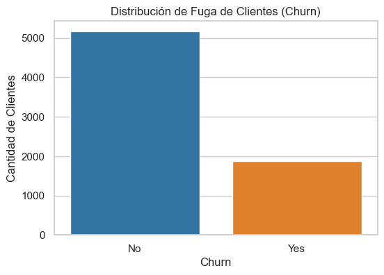
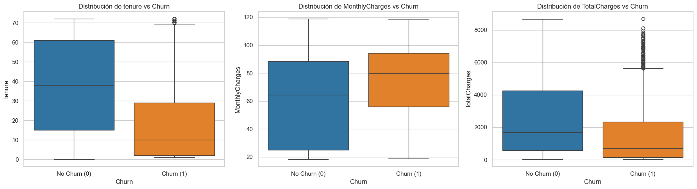
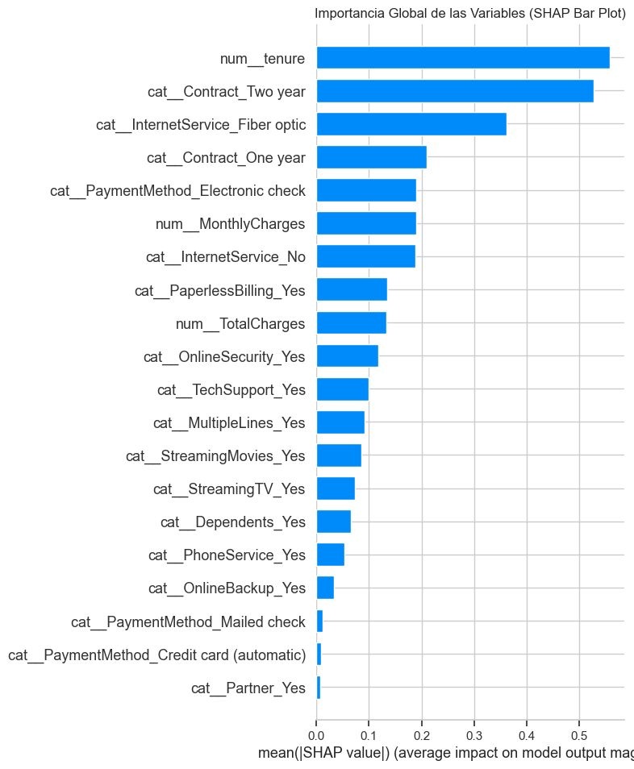
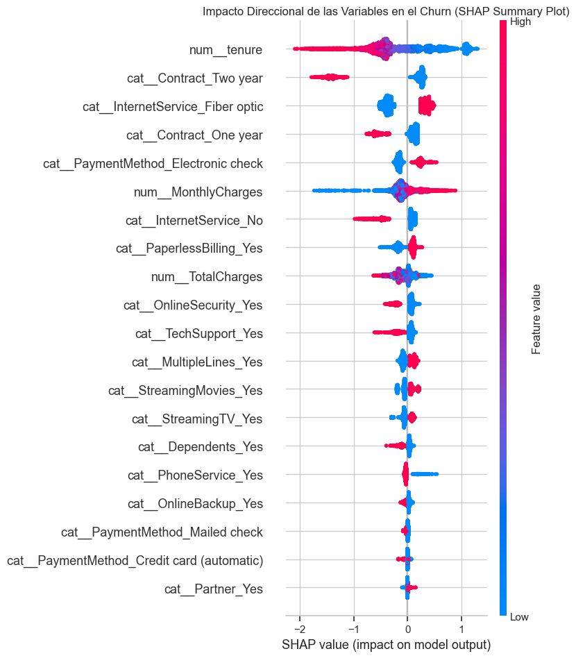

Code
#%pip install kagglehub xgboost shapGabriel Sánchez
October 24, 2026
El objetivo de este proyecto es desarrollar un modelo de Machine Learning capaz de predecir si un cliente de una empresa de telecomunicaciones abandonará el servicio (Churn).
En el ámbito de negocio, predecir la fuga de clientes permite a los equipos de retención anticiparse y ofrecer incentivos personalizados, reduciendo los costes de adquisición de nuevos clientes.
Abordaremos este problema como una clasificación binaria, evaluando diferentes modelos y priorizando el impacto económico de nuestras predicciones.
import kagglehub
import shutil
# Descargamos el dataset
path = kagglehub.dataset_download("blastchar/telco-customer-churn")
# Vemos qué archivos hay en esa carpeta
archivos = os.listdir(path)
print("Archivos encontrados:", archivos)
# Cargamos el CSV y creamos la carpeta data
csv_file = [f for f in archivos if f.endswith(".csv")][0]
full_path = os.path.join(path, csv_file)
# Crear carpeta de datos si no existe
os.makedirs("data", exist_ok=True)
# Copiar el archivo desde la caché de kagglehub a tu proyecto
destino = os.path.join("data", csv_file)
shutil.copy(full_path, destino)Archivos encontrados: ['WA_Fn-UseC_-Telco-Customer-Churn.csv']'data\\WA_Fn-UseC_-Telco-Customer-Churn.csv'import pandas as pd
import numpy as np
import matplotlib.pyplot as plt
import seaborn as sns
import warnings
# Configuración visual
sns.set_theme(style="whitegrid")
warnings.filterwarnings("ignore")
# Carga del dataset
df = pd.read_csv("data/WA_Fn-UseC_-Telco-Customer-Churn.csv")
# Visualizamos las 5 primeras filas para entender la estructura
display(df.head())
| customerID | gender | SeniorCitizen | Partner | Dependents | tenure | PhoneService | MultipleLines | InternetService | OnlineSecurity | ... | DeviceProtection | TechSupport | StreamingTV | StreamingMovies | Contract | PaperlessBilling | PaymentMethod | MonthlyCharges | TotalCharges | Churn | |
|---|---|---|---|---|---|---|---|---|---|---|---|---|---|---|---|---|---|---|---|---|---|
| 0 | 7590-VHVEG | Female | 0 | Yes | No | 1 | No | No phone service | DSL | No | ... | No | No | No | No | Month-to-month | Yes | Electronic check | 29.85 | 29.85 | No |
| 1 | 5575-GNVDE | Male | 0 | No | No | 34 | Yes | No | DSL | Yes | ... | Yes | No | No | No | One year | No | Mailed check | 56.95 | 1889.5 | No |
| 2 | 3668-QPYBK | Male | 0 | No | No | 2 | Yes | No | DSL | Yes | ... | No | No | No | No | Month-to-month | Yes | Mailed check | 53.85 | 108.15 | Yes |
| 3 | 7795-CFOCW | Male | 0 | No | No | 45 | No | No phone service | DSL | Yes | ... | Yes | Yes | No | No | One year | No | Bank transfer (automatic) | 42.30 | 1840.75 | No |
| 4 | 9237-HQITU | Female | 0 | No | No | 2 | Yes | No | Fiber optic | No | ... | No | No | No | No | Month-to-month | Yes | Electronic check | 70.70 | 151.65 | Yes |
5 rows × 21 columns
Antes de entrenar cualquier modelo, necesitamos entender la calidad de nuestros datos:
Churn)? (Problema de clases desbalanceadas)# Primero, obtenemos información general de las columnas y tipos de datos
print("--- INFO DEL DATASET ---")
df.info()
# Ahora vemos un conteo de valores nulos
print("\n--- VALORES NULOS ---")
print(df.isnull().sum()[df.isnull().sum() > 0])
# Tercero, vemos la distribución de la variable objetivo (Churn)
print("\n--- DISTRIBUCIÓN DEL CHURN ---")
churn_dist = df['Churn'].value_counts(normalize=True) * 100
print(churn_dist)
# Gráfico rápido del target
plt.figure(figsize=(6, 4))
sns.countplot(data=df, x='Churn', palette=['#1f77b4', '#ff7f0e'])
plt.title('Distribución de Fuga de Clientes (Churn)')
plt.ylabel('Cantidad de Clientes')
plt.show()--- INFO DEL DATASET ---
<class 'pandas.DataFrame'>
RangeIndex: 7043 entries, 0 to 7042
Data columns (total 21 columns):
# Column Non-Null Count Dtype
--- ------ -------------- -----
0 customerID 7043 non-null str
1 gender 7043 non-null str
2 SeniorCitizen 7043 non-null int64
3 Partner 7043 non-null str
4 Dependents 7043 non-null str
5 tenure 7043 non-null int64
6 PhoneService 7043 non-null str
7 MultipleLines 7043 non-null str
8 InternetService 7043 non-null str
9 OnlineSecurity 7043 non-null str
10 OnlineBackup 7043 non-null str
11 DeviceProtection 7043 non-null str
12 TechSupport 7043 non-null str
13 StreamingTV 7043 non-null str
14 StreamingMovies 7043 non-null str
15 Contract 7043 non-null str
16 PaperlessBilling 7043 non-null str
17 PaymentMethod 7043 non-null str
18 MonthlyCharges 7043 non-null float64
19 TotalCharges 7043 non-null str
20 Churn 7043 non-null str
dtypes: float64(1), int64(2), str(18)
memory usage: 1.1 MB
--- VALORES NULOS ---
Series([], dtype: int64)
--- DISTRIBUCIÓN DEL CHURN ---
Churn
No 73.463013
Yes 26.536987
Name: proportion, dtype: float64
Tras la inspección inicial, hemos detectado tres puntos clave que debemos solucionar antes del análisis visual y el modelado:
TotalCharges es de tipo texto. Esto se debe a que algunos clientes nuevos (con 0 meses de antigüedad) tienen un espacio en blanco en esa columna. Vamos a forzar su conversión a numérico y rellenar esos valores vacíos con 0.customerID es un identificador único que no tiene capacidad predictiva. Mantenerla podría introducir ruido en los modelos.Churn (‘Yes’ / ‘No’) en (1 / 0).# Forzamos TotalCharges a numérico
df['TotalCharges'] = pd.to_numeric(df['TotalCharges'], errors='coerce')
# Vemos cuanto nulos se han generado
nulos_generados = df['TotalCharges'].isnull().sum()
print(f"Se han encontrado {nulos_generados} valores vacíos en TotalCharges.")
# Dado que son clientes con 'tenure' = 0 (recién llegados), rellenamos el cargo total con 0
df['TotalCharges'].fillna(0, inplace=True)
# Ahora eliminamos la columna de customerID
df.drop('customerID', axis=1, inplace=True)
# Transformarmos la variable objetivo "Churn" a binaria (1 = Yes, 0 = No)
df['Churn'] = df['Churn'].map({'Yes': 1, 'No': 0})
# Comprobamos que los cambios se han aplicado correctamente
print("\n--- NUEVOS TIPOS DE DATOS ---")
print(df[['TotalCharges', 'Churn']].dtypes)Se han encontrado 11 valores vacíos en TotalCharges.
--- NUEVOS TIPOS DE DATOS ---
TotalCharges float64
Churn int64
dtype: objectAhora que los datos están limpios, vamos a analizar cómo se relacionan nuestras variables numéricas con la fuga de clientes. Las variables numéricas principales son:
tenure: Meses que el cliente lleva en la compañía.MonthlyCharges: Cargo mensual.TotalCharges: Cargo total acumulado.Utilizaremos diagramas de caja (Boxplots) y gráficos de densidad para entender si existen diferencias claras entre los clientes que se quedan y los que se van.
# Variables numéricas continuas
num_cols = ['tenure', 'MonthlyCharges', 'TotalCharges']
fig, axes = plt.subplots(1, 3, figsize=(18, 5))
for i, col in enumerate(num_cols):
# Boxplot para ver medianas y dispersión
sns.boxplot(data=df, x='Churn', y=col, ax=axes[i], palette=['#1f77b4', '#ff7f0e'])
axes[i].set_title(f'Distribución de {col} vs Churn')
axes[i].set_xticks([0, 1])
axes[i].set_xticklabels(['No Churn (0)', 'Churn (1)'])
plt.tight_layout()
plt.show()
De los gráficos de distribución extraemos insights de negocio clave:
Para evitar el Data Leakage (fuga de información del conjunto de test al de entrenamiento), primero debemos separar los datos. Usaremos stratify=y para mantener la proporción del 73/27 en ambos conjuntos.
Después, construiremos un ColumnTransformer de Scikit-Learn que aplicará:
StandardScaler a las variables numéricas.OneHotEncoder a las variables categóricas (como el tipo de contrato o el género).from sklearn.model_selection import train_test_split
from sklearn.compose import ColumnTransformer
from sklearn.preprocessing import StandardScaler, OneHotEncoder
from sklearn.impute import SimpleImputer
from sklearn.pipeline import Pipeline
# Separamos características (X) de la variable objetivo (y)
X = df.drop('Churn', axis=1)
y = df['Churn']
# Train-Test Split (Estratificado por el desbalanceo)
X_train, X_test, y_train, y_test = train_test_split(
X, y, test_size=0.2, random_state=42, stratify=y
)
# Identificamos listas de columnas numéricas y categóricas
num_cols = ['tenure', 'MonthlyCharges', 'TotalCharges']
cat_cols = X_train.select_dtypes(include=['object']).columns.tolist()
# Crear los transformadores
# Creamos un mini-pipeline numérico que primero rellena nulos con 0 y luego escala
num_transformer = Pipeline(steps=[
('imputer', SimpleImputer(strategy='constant', fill_value=0)),
('scaler', StandardScaler())
])
# Transformador categórico
cat_transformer = OneHotEncoder(drop='first', handle_unknown='ignore')
# Unimos todo en un ColumnTransformer
preprocessor = ColumnTransformer(
transformers=[
('num', num_transformer, num_cols),
('cat', cat_transformer, cat_cols)
]
)
# Ajustamos y transformamos
X_train_prep = preprocessor.fit_transform(X_train)
X_test_prep = preprocessor.transform(X_test)
print("Pipeline ejecutado con éxito. Nulos manejados automáticamente.")Pipeline ejecutado con éxito. Nulos manejados automáticamente.Vamos a entrenar cuatro modelos distintos con sus hiperparámetros por defecto para establecer una línea base de rendimiento. Incluiremos:
Dado el ligero desbalanceo de clases (73/27), evaluaremos los modelos utilizando Precision, Recall, F1-Score y ROC-AUC.
from sklearn.linear_model import LogisticRegression
from sklearn.ensemble import RandomForestClassifier
from sklearn.svm import SVC
from xgboost import XGBClassifier
from sklearn.metrics import accuracy_score, precision_score, recall_score, f1_score, roc_auc_score
# Definimos los modelos
# Configuramos probability=True en SVC para poder calulcar el ROC-AUC
models = {
"Regresión Logística": LogisticRegression(max_iter=1000, random_state=42),
"SVM (Kernel RBF)": SVC(probability=True, random_state=42),
"Random Forest": RandomForestClassifier(random_state=42),
"XGBoost": XGBClassifier(use_label_encoder=False, eval_metric="logloss", random_state=42)
}
# Bucle para entrenar y evaluar cada modelo
results = []
for name, model in models.items():
#Entrenamiento
model.fit(X_train_prep, y_train)
#Predicción de clase (0 o 1) y probabilidad (para ROC-AUC)
y_pred = model.predict(X_test_prep)
y_proba = model.predict_proba(X_test_prep)[:, 1]
#Cálculo de métricas
acc = accuracy_score(y_test, y_pred)
prec = precision_score(y_test, y_pred)
rec = recall_score(y_test, y_pred)
f1 = f1_score(y_test, y_pred)
roc_auc = roc_auc_score(y_test, y_proba)
#Guardar resultados
results.append({
"Modelo": name,
"Accuracy": acc,
"Precision": prec,
"Recall": rec,
"F1-Score": f1,
"ROC-AUC": roc_auc
})
# Creamos un DataFrame de resultados y ordenamos por ROC-AUC
df_results = pd.DataFrame(results).sort_values(by="ROC-AUC", ascending = False)
display(df_results.style.background_gradient(cmap='Blues'))| Modelo | Accuracy | Precision | Recall | F1-Score | ROC-AUC | |
|---|---|---|---|---|---|---|
| 0 | Regresión Logística | 0.801278 | 0.646875 | 0.553476 | 0.596542 | 0.840908 |
| 2 | Random Forest | 0.779986 | 0.608844 | 0.478610 | 0.535928 | 0.820733 |
| 3 | XGBoost | 0.779986 | 0.598160 | 0.521390 | 0.557143 | 0.815549 |
| 1 | SVM (Kernel RBF) | 0.795600 | 0.656934 | 0.481283 | 0.555556 | 0.797696 |
Los modelos base tienen un Recall bajo en la clase positiva (Churn). Para un problema de retención de clientes, los Falsos Negativos (clientes que el modelo cree que se quedan, pero se van) son muy costosos.
Vamos a optimizar los cuatro modelos simultáneamente utilizando GridSearchCV. Para compensar el desbalanceo de clases, aplicaremos el parámetro class_weight='balanced' en Regresión Logística, SVM y Random Forest, y scale_pos_weight en XGBoost.
from sklearn.model_selection import GridSearchCV
# Calculamos el peso para XGBoost
negativos = (y_train == 0).sum()
positivos = (y_train == 1).sum()
scale_pos_weight_value = negativos/positivos
# Definimos los modelos base con el balanceo de clases activado y sus grids de parámetros
models_grids = {
"Regresión Logística": {
"model": LogisticRegression(class_weight='balanced', random_state=42, max_iter=1000),
"params": {'C': [0.01, 0.1, 1, 10]}
},
"SVM (Kernel RBF)": {
"model": SVC(probability=True, class_weight='balanced', random_state=42),
"params": {'C': [0.1, 1, 10], 'gamma': ['scale', 'auto']}
},
"Random Forest": {
"model": RandomForestClassifier(class_weight='balanced', random_state=42),
"params": {'n_estimators': [100, 200], 'max_depth': [5, 10]}
},
"XGBoost": {
"model": XGBClassifier(use_label_encoder=False, eval_metric='logloss',
scale_pos_weight=scale_pos_weight_value, random_state=42),
"params": {'n_estimators': [100, 200], 'max_depth': [3, 5], 'learning_rate': [0.01, 0.1]}
}
}
# Bucle de optimización
opt_results = []
best_estimators = {}
for name, config in models_grids.items():
print(f"Optimizando {name}... (por favor, espera)")
grid = GridSearchCV(
estimator=config["model"],
param_grid=config["params"],
scoring='roc_auc',
cv=5,
n_jobs=-1
)
grid.fit(X_train_prep, y_train)
best_model = grid.best_estimator_
best_estimators[name] = best_model
y_pred = best_model.predict(X_test_prep)
y_proba = best_model.predict_proba(X_test_prep)[:, 1]
opt_results.append({
"Modelo Optimizado": name,
"Accuracy": accuracy_score(y_test, y_pred),
"Precision": precision_score(y_test, y_pred),
"Recall": recall_score(y_test, y_pred),
"F1-Score": f1_score(y_test, y_pred),
"ROC-AUC": roc_auc_score(y_test, y_proba)
})
# Mostramos resultados
print("\n--- RESULTADOS MODELOS OPTIMIZADOS ---")
df_opt_results = pd.DataFrame(opt_results).sort_values(by="ROC-AUC", ascending=False)
display(df_opt_results.style.background_gradient(cmap='Greens'))Optimizando Regresión Logística... (por favor, espera)
Optimizando SVM (Kernel RBF)... (por favor, espera)
Optimizando Random Forest... (por favor, espera)
Optimizando XGBoost... (por favor, espera)
--- RESULTADOS MODELOS OPTIMIZADOS ---| Modelo Optimizado | Accuracy | Precision | Recall | F1-Score | ROC-AUC | |
|---|---|---|---|---|---|---|
| 3 | XGBoost | 0.742370 | 0.509275 | 0.807487 | 0.624612 | 0.842021 |
| 2 | Random Forest | 0.733144 | 0.498371 | 0.818182 | 0.619433 | 0.839515 |
| 0 | Regresión Logística | 0.734564 | 0.500000 | 0.780749 | 0.609603 | 0.839459 |
| 1 | SVM (Kernel RBF) | 0.730305 | 0.494983 | 0.791444 | 0.609053 | 0.834358 |
En entornos de negocio, predecir el Churn no es suficiente; necesitamos entender los motivos para poder diseñar campañas de retención efectivas.
Utilizaremos SHAP (SHapley Additive exPlanations), basado en la teoría de juegos, para explicar las predicciones de nuestro mejor modelo (XGBoost). Esto nos permitirá visualizar qué variables tienen más peso a nivel global y cómo afectan a la probabilidad de fuga (si la aumentan o la disminuyen).
import shap
# Obtenemos los nombres de las columnas generadas por el ColumnTransformer
feature_names = preprocessor.get_feature_names_out()
# Convertimos el X_train_prep (array de numpy) en un DataFrame para que SHAP lea los nombres
X_train_shap = pd.DataFrame(X_train_prep, columns=feature_names)
# Recuperamos el mejor modelo de XGBoost de nuestro diccionario de optimización
best_xgb_model = best_estimators["XGBoost"]
# Inicializamos el explicador de SHAP para modelos de árboles
explainer = shap.TreeExplainer(best_xgb_model)
shap_values = explainer.shap_values(X_train_shap)
# 5. Gráfico 1: Importancia Global de las variables (Feature Importance tradicional)
plt.figure(figsize=(10, 6))
shap.summary_plot(shap_values, X_train_shap, plot_type="bar", show=False)
plt.title("Importancia Global de las Variables (SHAP Bar Plot)")
plt.show()
# 6. Gráfico 2: Impacto direccional de las variables (Summary Plot)
plt.figure(figsize=(10, 6))
shap.summary_plot(shap_values, X_train_shap, show=False)
plt.title("Impacto Direccional de las Variables en el Churn (SHAP Summary Plot)")
plt.show()

Gracias al análisis de explicabilidad con SHAP, hemos identificado los principales motores que impulsan la fuga de clientes. Estos descubrimientos permiten al equipo de negocio tomar decisiones estratégicas:
Hemos construido un pipeline de Machine Learning end-to-end robusto, solucionando problemas de fuga de datos (Data Leakage) y desbalanceo de clases. Nuestro modelo XGBoost optimizado logró aumentar la detección de clientes en riesgo (Recall) del 52% al 80%, priorizando la retención por encima de la precisión global, lo que se traduce en un impacto económico directo y positivo para la compañía.